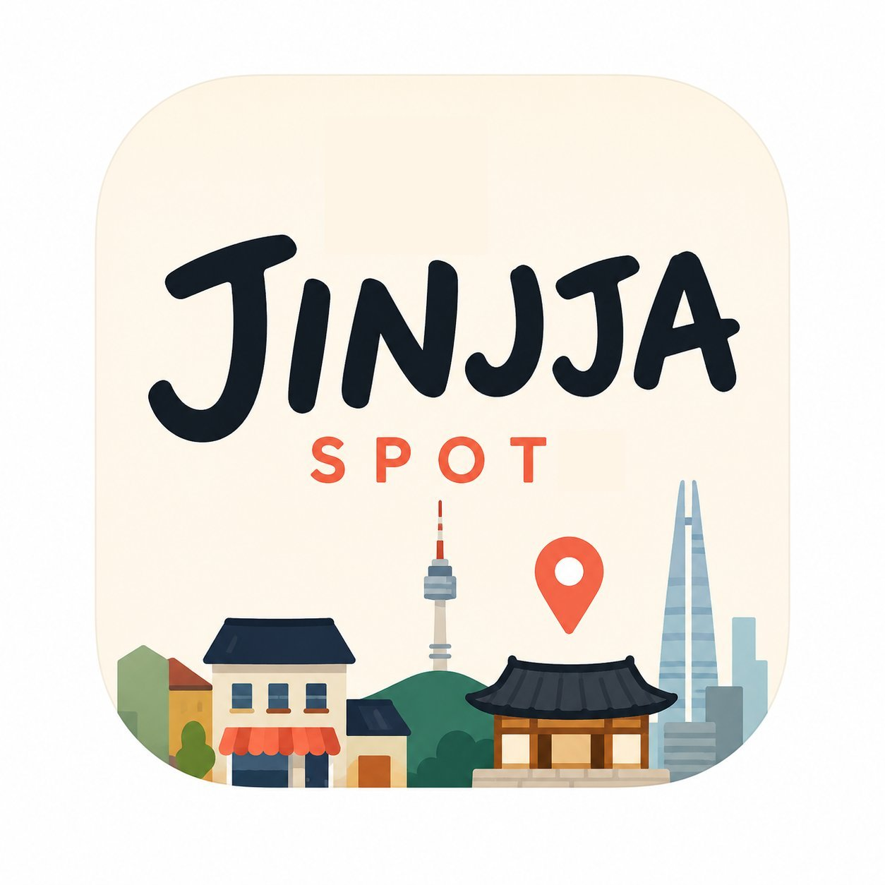

Jinjja is an AI friend that bridges the Korean-language internet — Naver blogs, Kakao Maps, local press — to English-speaking foreigners. Underneath: a curated database of 100+ vetted venues, a video reels discovery feed, multi-stop routes, and a hosts directory that connects users to locals so no one has to eat alone.
Most discovery apps are one feature: a directory, a chat, a feed. Jinjja stitches together five surfaces that cover the entire arc of a foreign visitor's trip — discovering, planning, eating, sharing, and connecting with locals.
Each surface is described below alongside a live mockup of how it renders in the app.
A user types "where can I drink in Hongdae tonight" or "what's the best food in Jamsil" — and Jinjja responds the way a Seoul-local friend would over text. It also handles the Korean versions of the same prompts: "홍대에서 술 마실 수 있는 곳" or "잠실 맛집 추천".
Under the hood, Claude Haiku reasons about the prompt, calls one of four tools, queries our curated database (with a fallback to Korean-language sources), and streams back a conversational response with structured place cards below.
A vertical, swipeable video feed of curated place clips. Foreigners discover restaurants the same way they discover everything else now — by watching, not reading.
Critically: every reel links directly to the venue. Tap the card and you're in the place detail with hours, address, menu, and the option to message the venue or save it to a Collection.
The biggest unmet need for foreigners visiting Korea isn't finding a restaurant. It's that so many great spots are group-only — Korean BBQ has minimum orders, soju is for sharing, the late-night experience requires a crew.
Hosts solves this. Foreigners and Koreans opt into a directory by neighborhood and interest. The AI matches them — a solo traveler wanting Korean BBQ tonight gets matched with a Korean who hosts BBQ nights, or another foreigner looking for the same.
For "plan my Saturday in Hongdae" prompts, the AI wires 2–5 venues into a sequenced itinerary with walking time between stops. Maps to the Korean dining tradition of 1차 (meal) → 2차 (drinks) → 3차 (after-spot).
Users can re-open routes, share them with friends, swap individual stops without losing the rest.
Users save places they love into named collections — "Date night spots", "Hangover cures near the office", "Things to try with my mom". Every user is essentially building their own personal Korean database of bars, restaurants, cafes, and clubs they want to come back to.
Users can also save Instagram posts and TikToks of places they spotted — paste the link, our AI discovery tool identifies the restaurant, and it lands directly in their Collection. The "I saw this place on TikTok but can't find it" problem is solved.
People can save before signing up — and when they do sign up, all their saved places carry over. No signup wall blocking first-use. The friction is gone.
The brain of Jinjja is Claude Haiku running on a Next.js Edge Function on Vercel. The mobile app sends prompts in, the function builds a system prompt with the user's location and history, and Haiku is given four tools it can call.
The intelligence isn't in generating words — it's in which tool Haiku picks based on the prompt. That's the reasoning step.
Anyone can call an LLM API. What makes Jinjja different is the combination of assets and features that no foreign-built competitor can replicate — a curated dataset, a two-sided hosts network, Korea-specific AI intelligence, a personal AI that learns each user, consolidated content discovery, and the ability to save from anywhere.